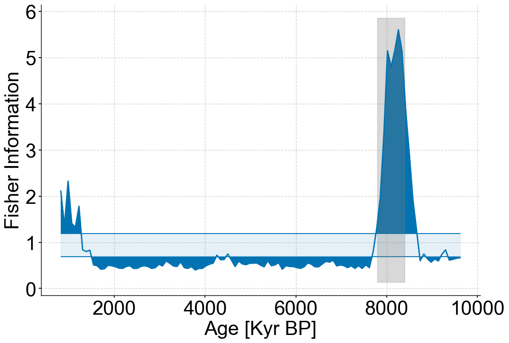

Figure 6#
import pickle
import random
import pyleoclim as pyleo
import matplotlib.pyplot as plt
from matplotlib import gridspec
import matplotlib.transforms as transforms
import matplotlib.patches as mpatches
import seaborn as sns
import numpy as np
import ammonyte as amt
from matplotlib.gridspec import GridSpec
from tqdm import tqdm
from pylipd.lipd import LiPD
---------------------------------------------------------------------------
ModuleNotFoundError Traceback (most recent call last)
Cell In[1], line 4
1 import pickle
2 import random
----> 4 import pyleoclim as pyleo
5 import matplotlib.pyplot as plt
6 from matplotlib import gridspec
ModuleNotFoundError: No module named 'pyleoclim'
#We suppress warnings for these notebooks for presentation purposes. Best practice is to not do this though.
import warnings
warnings.filterwarnings('ignore')
end_time=10000
lipd_path = './data/8k_ice'
record = 'NGRIP.NGRIP.2004'
d = LiPD()
d.load(f'{lipd_path}/{record}.lpd')
df = d.get_timeseries_essentials()
row = df[df['time_variableName']=='age']
lat = row['geo_meanLat'].to_numpy()[0]
lon = row['geo_meanLon'].to_numpy()[0]
elevation = row['geo_meanElev'].to_numpy()[0]
value = row['paleoData_values'].to_numpy()[0]
value_name = row['paleoData_variableName'].to_numpy()[0]
value_unit = row['paleoData_units'].to_numpy()[0]
time = row['time_values'].to_numpy()[0]
time_unit = row['time_units'].to_numpy()[0]
time_name = row['time_variableName'].to_numpy()[0]
label = row['dataSetName'].to_numpy()[0]
geo_series = pyleo.GeoSeries(time=time,
value=value,
lat=lat,
lon=lon,
elevation=elevation,
time_unit=time_unit,
time_name=time_name,
value_name=value_name,
value_unit=value_unit,
label=label,
archiveType='ice')
series = geo_series.copy()
series.time_unit = 'Years BP'
series = series.slice((0,end_time)).interp()
Loading 1 LiPD files
100%|██████████| 1/1 [00:00<00:00, 63.61it/s]
Loaded..
Time axis values sorted in ascending order
/Users/alexjames/Documents/GitHub/Pyleoclim_util/pyleoclim/core/geoseries.py:165: UserWarning: auto_time_params is not specified. Currently default behavior sets this to True. In a future release this will be changed to False.
super().__init__(time, value, time_unit, time_name, value_name,
/Users/alexjames/Documents/GitHub/Pyleoclim_util/pyleoclim/core/series.py:267: UserWarning: archiveType should be one of the following: ice-other, ice/rock, coral, documents, glacierice, hybrid, lakesediment, marinesediment, sclerosponge, speleothem, wood, molluskshells, peat, midden, instrumental, model,
warnings.warn('archiveType should be one of the following: ' + mystring)
level=4
m=13
eps=1
spike_series = series.copy()
spike_series.value = np.zeros(len(spike_series.value))
index = np.where((spike_series.time >= 7800) & (spike_series.time <= 8400))[0]
spike = -1+(1/len(index))*np.arange(len(index))
spike_series.value[index] += spike
success_counter=0
noise_series = pyleo.Series(*pyleo.utils.gen_ts(model='ar1',t=spike_series.time,scale=1/level)).convert_time_unit('Years BP')
noisy_spike = spike_series.copy()
noisy_spike.value += noise_series.value
apply_series=noisy_spike.convert_time_unit('Years')
amt_series = amt.Series(
time=apply_series.time,
value=apply_series.value,
time_name = apply_series.time_unit,
value_name = apply_series.value_name,
time_unit = apply_series.time_unit,
value_unit = apply_series.value_unit,
label = apply_series.label,
sort_ts=None
)
td = amt_series.embed(m=m)
eps_res = td.find_epsilon(eps=eps,target_density=.05,tolerance=.01)
print(f'Tau is {td.tau}')
rm = eps_res['Output']
lp_series = rm.laplacian_eigenmaps(w_size=20,w_incre=4)
lp_series = lp_series.convert_time_unit('years BP')
Time axis values sorted in ascending order
Initial density is 0.0495
Initial density is within the tolerance window!
Tau is 3
/var/folders/5k/0y4jsz592qq0y78c_0ddgcpm0000gn/T/ipykernel_16039/494794242.py:11: UserWarning: auto_time_params is not specified. Currently default behavior sets this to True. In a future release this will be changed to False.
noise_series = pyleo.Series(*pyleo.utils.gen_ts(model='ar1',t=spike_series.time,scale=1/level)).convert_time_unit('Years BP')
/var/folders/5k/0y4jsz592qq0y78c_0ddgcpm0000gn/T/ipykernel_16039/494794242.py:11: UserWarning: No time_unit parameter provided. Assuming years CE.
noise_series = pyleo.Series(*pyleo.utils.gen_ts(model='ar1',t=spike_series.time,scale=1/level)).convert_time_unit('Years BP')
/var/folders/5k/0y4jsz592qq0y78c_0ddgcpm0000gn/T/ipykernel_16039/494794242.py:11: UserWarning: No time_name parameter provided. Assuming "Time".
noise_series = pyleo.Series(*pyleo.utils.gen_ts(model='ar1',t=spike_series.time,scale=1/level)).convert_time_unit('Years BP')
/var/folders/5k/0y4jsz592qq0y78c_0ddgcpm0000gn/T/ipykernel_16039/494794242.py:16: UserWarning: auto_time_params is not specified. Currently default behavior sets this to True. In a future release this will be changed to False.
amt_series = amt.Series(
/Users/alexjames/Documents/GitHub/Ammonyte/ammonyte/core/rqa_res.py:22: UserWarning: auto_time_params is not specified. Currently default behavior sets this to True. In a future release this will be changed to False.
super().__init__(time,value,time_name,time_unit,value_name,value_unit,label,sort_ts=None)
/Users/alexjames/Documents/GitHub/Ammonyte/ammonyte/core/rqa_res.py:22: UserWarning: No time_name parameter provided. Assuming "Time".
super().__init__(time,value,time_name,time_unit,value_name,value_unit,label,sort_ts=None)
fig,ax=spike_series.plot()
ax.set_ylabel('Temperature')
Text(0, 0.5, 'Temperature')
noise_series.plot()
(<Figure size 1000x400 with 1 Axes>,
<Axes: xlabel='Age [Years BP]', ylabel='value'>)
noisy_spike.plot()
(<Figure size 1000x400 with 1 Axes>,
<Axes: xlabel='Age [Years BP]', ylabel='d18O [permil]'>)
fig,ax=lp_series.confidence_fill_plot()
ax.set_ylabel('Fisher Information')
ax.set_xlabel('Age [Kyr BP]')
ylim=ax.get_ylim()
ax.fill_betweenx(ylim,7800,8400,color='grey',alpha=.3)
ax.legend().set_visible(False)

#Production figure
SMALL_SIZE = 30
MEDIUM_SIZE = 30
BIGGER_SIZE = 34
plt.rc('font', size=SMALL_SIZE) # controls default text sizes
plt.rc('axes', titlesize=MEDIUM_SIZE) # fontsize of the axes title
plt.rc('axes', labelsize=MEDIUM_SIZE) # fontsize of the x and y labels
plt.rc('xtick', labelsize=MEDIUM_SIZE) # fontsize of the tick labels
plt.rc('ytick', labelsize=MEDIUM_SIZE) # fontsize of the tick labels
plt.rc('legend', fontsize=BIGGER_SIZE) # legend fontsize
plt.rc('figure', titlesize=BIGGER_SIZE) # fontsize of the figure title
fig = plt.figure(constrained_layout=True,figsize=(24,18))
gs = GridSpec(2, 2, figure=fig)
# create sub plots as grid
ax1 = fig.add_subplot(gs[0, 0])
ax2 = fig.add_subplot(gs[0, 1])
ax3 = fig.add_subplot(gs[1, :])
spike_series.plot(ax=ax1,legend=False,ylabel='Temperature')
patch = mpatches.Patch(fc="w", fill=False, edgecolor='none', linewidth=0,label='a)')
ax1.legend(handles=[patch],loc='upper right')
noisy_spike.plot(ax=ax2,legend=False,ylabel='')
patch = mpatches.Patch(fc="w", fill=False, edgecolor='none', linewidth=0,label='b)')
ax2.legend(handles=[patch],loc='upper right')
lp_series.confidence_fill_plot(ax=ax3,legend=None,ylabel='FI')
ax3.fill_betweenx(ylim,7800,8400,color='grey',alpha=.3)
patch = mpatches.Patch(fc="w", fill=False, edgecolor='none', linewidth=0,label='c)')
ax3.legend(handles=[patch],loc='upper right')
<matplotlib.legend.Legend at 0x298704df0>